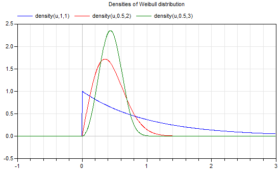

densityDensity of Weibull distribution |
|
Information
This information is part of the Modelica Standard Library maintained by the Modelica Association.
Syntax
Weibull.density(u, lambda=1, k=1);
Description
This function computes the probability density function according to a Weibull distribution with scale parameter lambda and shape parameter k. Equation:
y = if u >= 0 then (k/lambda)*(u/lambda)^(k - 1)*exp(-(u/lambda)^k) else 0.0;
Plot of the function:

For more details, see Wikipedia.
Example
density(0.5) // = 0.36787944117144233 density(1,0.5,2) // = 0.14652511110987343
See also
Syntax
y = density(u, lambda, k)
Inputs (3)
| u |
Type: Real Description: Random number over the real axis (-inf < u < inf) |
|---|---|
| lambda |
Default Value: 1 Type: Real Description: Scale parameter of the Weibull distribution |
| k |
Type: Real Description: Shape parameter of the Weibull distribution |
Outputs (1)
| y |
Type: Real Description: Density of u |
|---|